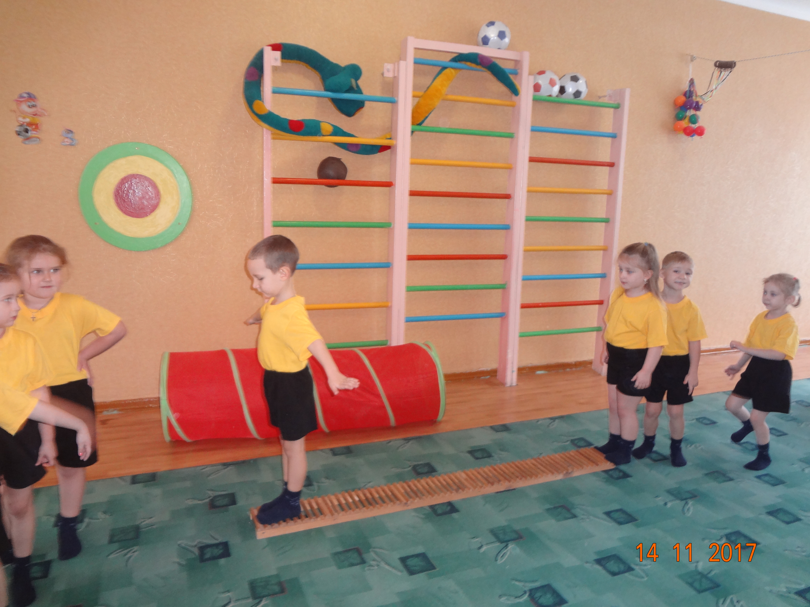
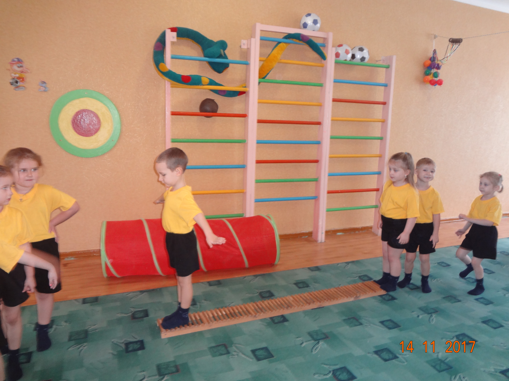
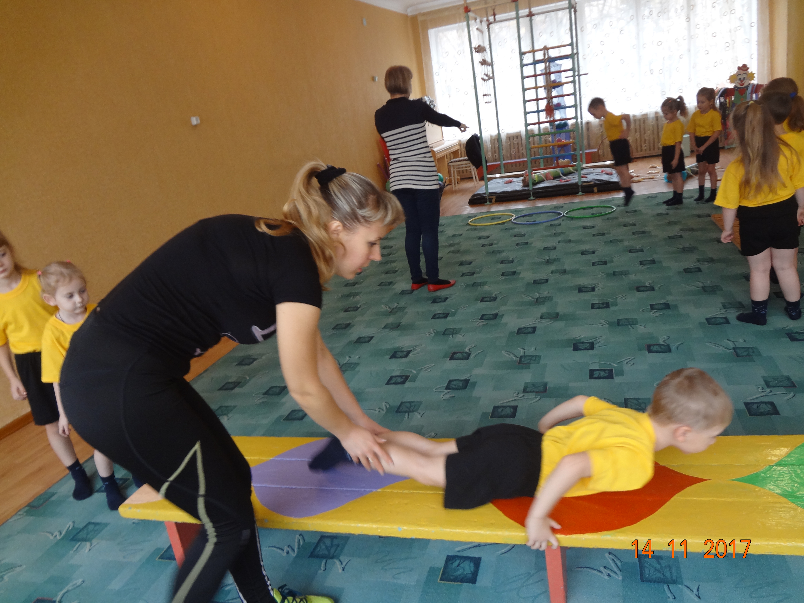
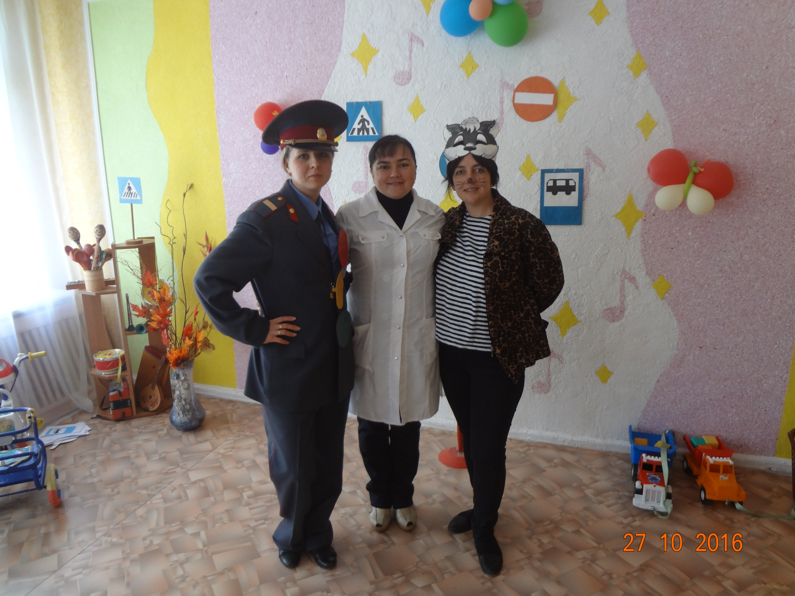
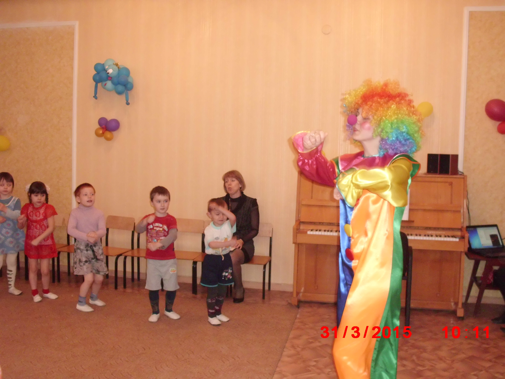
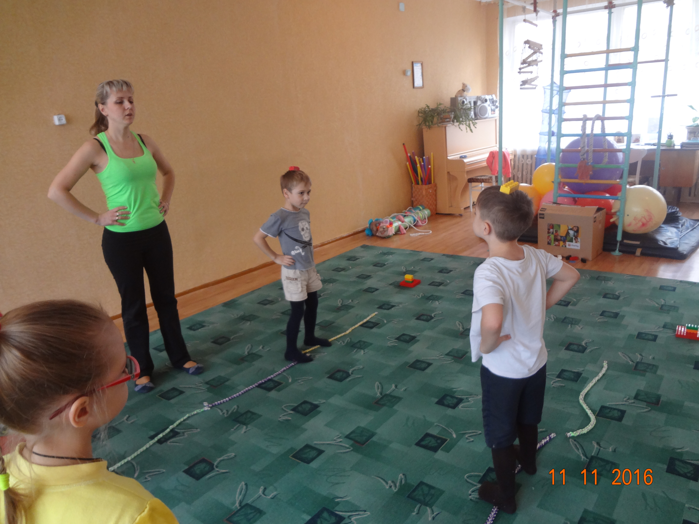
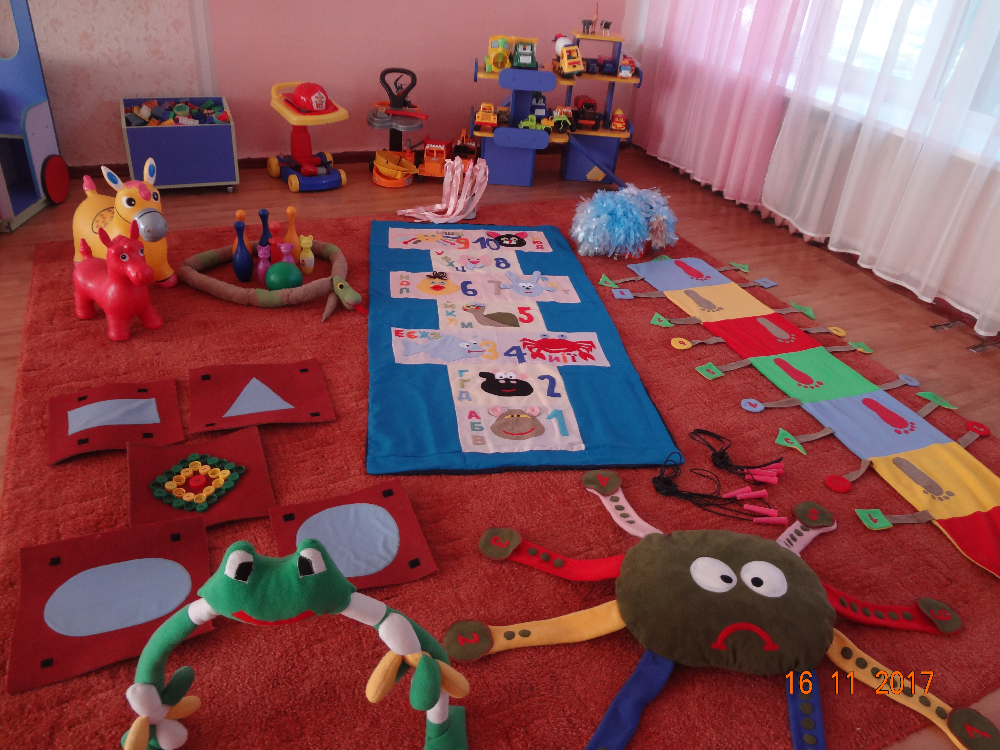
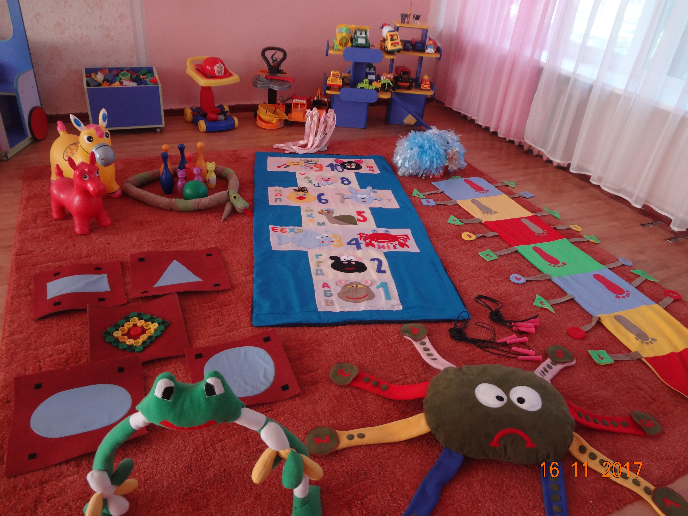

Система щоденних фізкультурно-оздоровчих заходів у режимі дня включає:
 

✔ - ранкову гімнастику з елементами дихальної гімнастики;
✔ - фізкультурні заняття та фізичні вправи;
✔ - гімнастику пробудження з різноманітними загартовуючими вправами: контрасні тупцювання, щіточковий масаж, "доріжки здоров`я", горіховий масаж, точковий масаж;
✔ - вправи на розвиток дрібної моторики рук;
✔ - рухливі ігри та фітболгімнастику.
З метою профілактики порушень постави та плоскостопості в фізкультурні заняття включаються єлементи оздоровчої фізкультури.
Систематичні заняття сприяють формуванню у дітей правильної постави, красивої ходи і тощо.
"Дітям, які і дорослим, хочеться бути здоровими і сильними.
Януш Корчак
Тільки діти не знають, що для цього потрібно робити.
Поясни їм і вони будуть берегтися"
Фізкультурно-оздоровча робота

Вся фізкультурно-оздоровча робота в ДНЗ здійснюється під безпосереднім керівництвом інструктора з фізкультури за методикою Е. С. Вільчковського та авторською програмою М.Єфименко "Казковий театр" й проводиться з урахуванням стану здоров’я, самопочуття, рівня фізичного розвитку та підготовленості дітей.
Цікаво та творчо проводяться фізкультурні свята, розваги, дні здоров’я під час яких дошкільники, педагоги, батьки спільно зміцнюють своє здоров’я, розуміють його цінність, вчаться здоровому способу життя, весело змагаються та перемагають.

Особлива увага педагогічного колективу приділяється загартуванню дитячого організму. Тому, педагоги якнайбільше використовують нетрадиційні методи оздоровлення: точковий масаж, ходьба по ребристих доріжках в процесі проведення загартовуючи процедур.
У всіх вікових групах вихователі проводять цільові прогулянки, екскурсії, піші переходи, сезонні оздоровчі прогулянки, які дуже подобаються дошкільникам.


В ДНЗ облаштований фізкультурний зал, в якому достатньо спортивного обладнання та інвентарю, нетрадиційного обладнання.

На території ДНЗ облаштований спортивний майданчик для гри у футбол, баскетбол, турніки, бігові доріжки, дуги.
В усіх вікових групах естетично оформлені та наповнені спортивні центри необхідним фізкультурним інвентарем (м’ячами, кеглями, скакалками, обручами, мішечками з піском, іншим).
 
